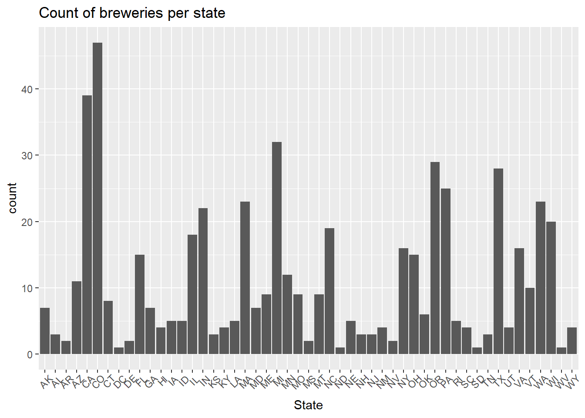
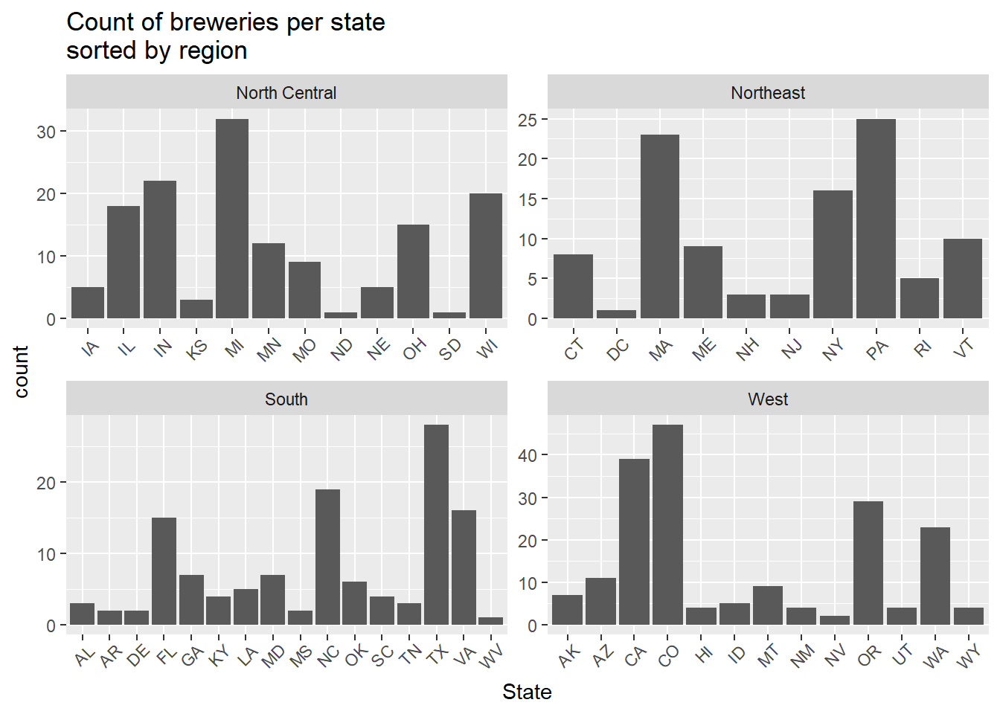
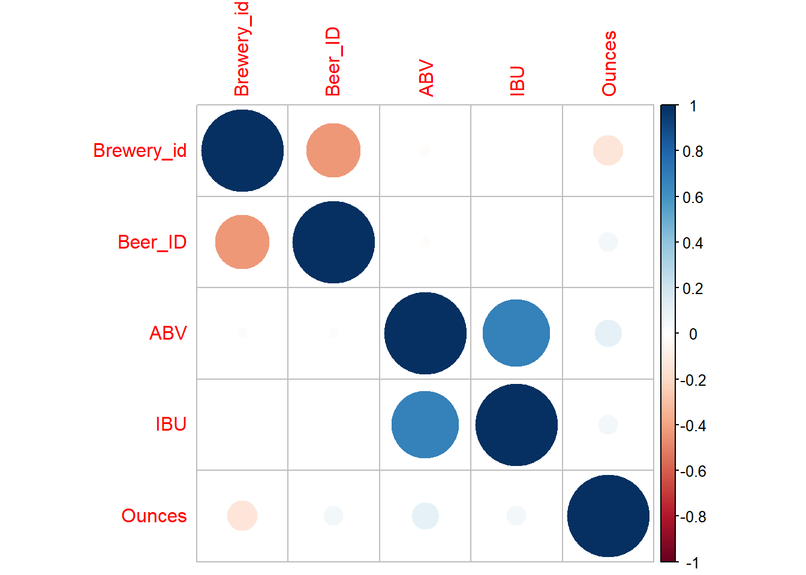
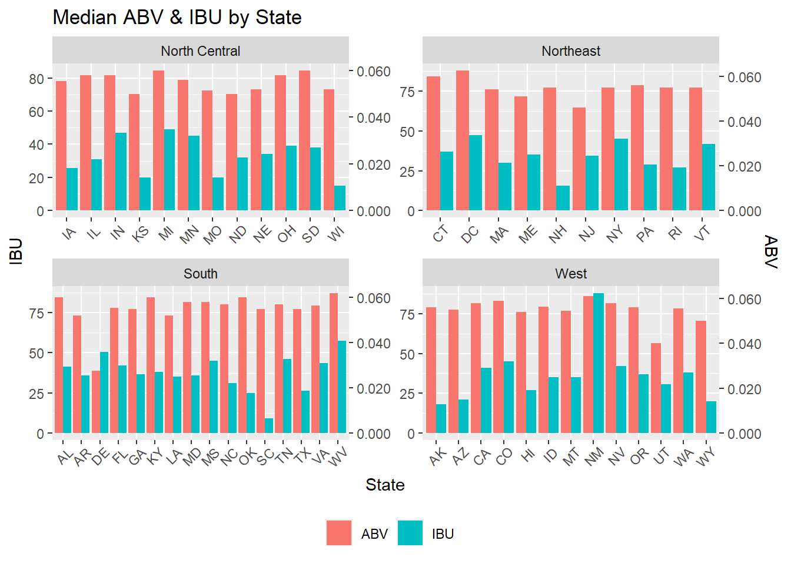
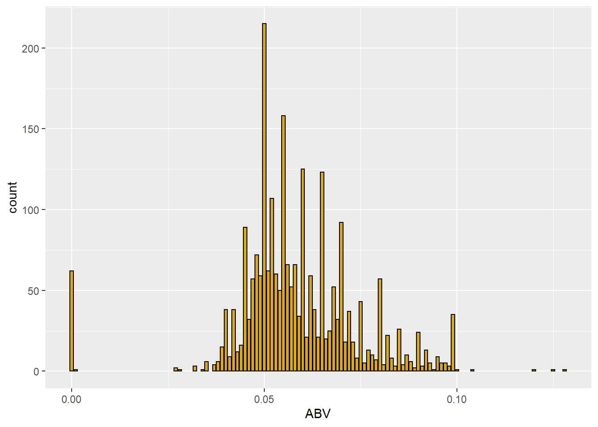
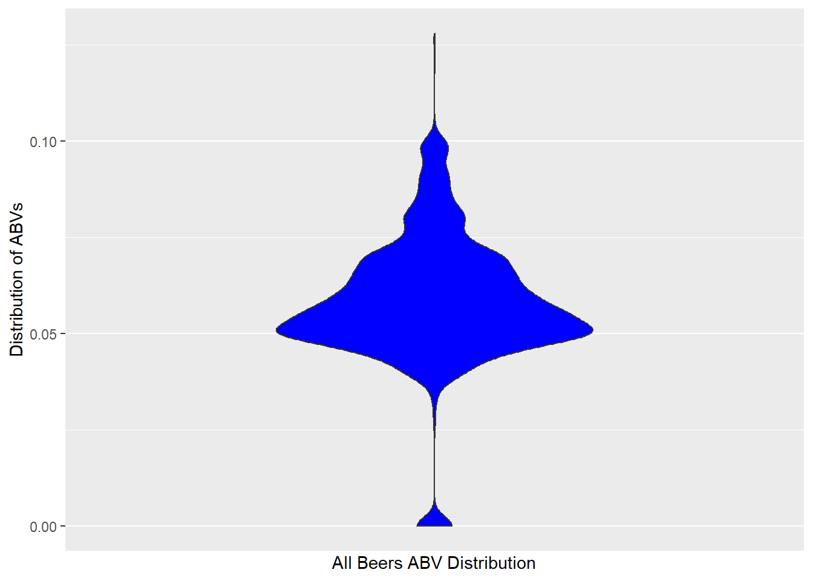
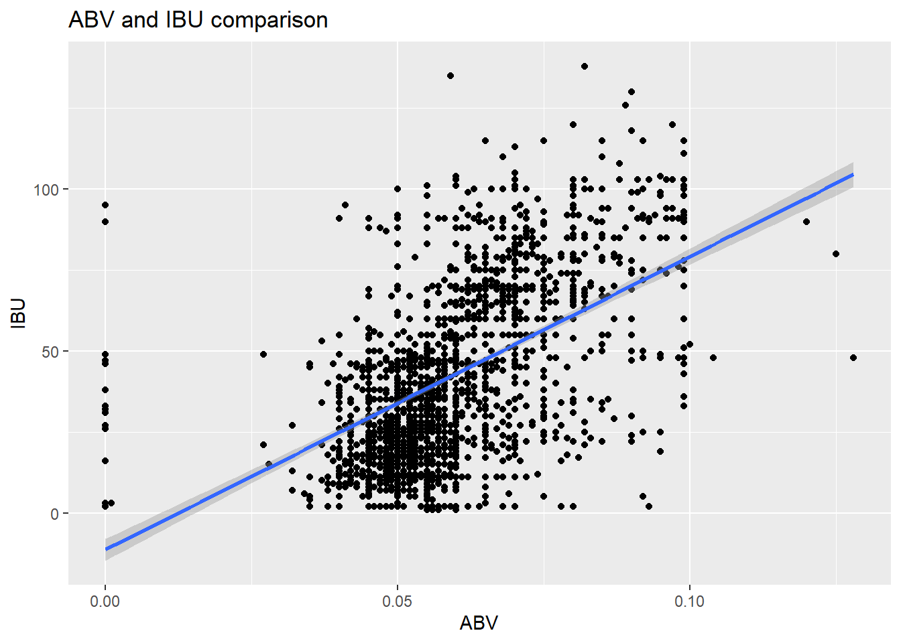
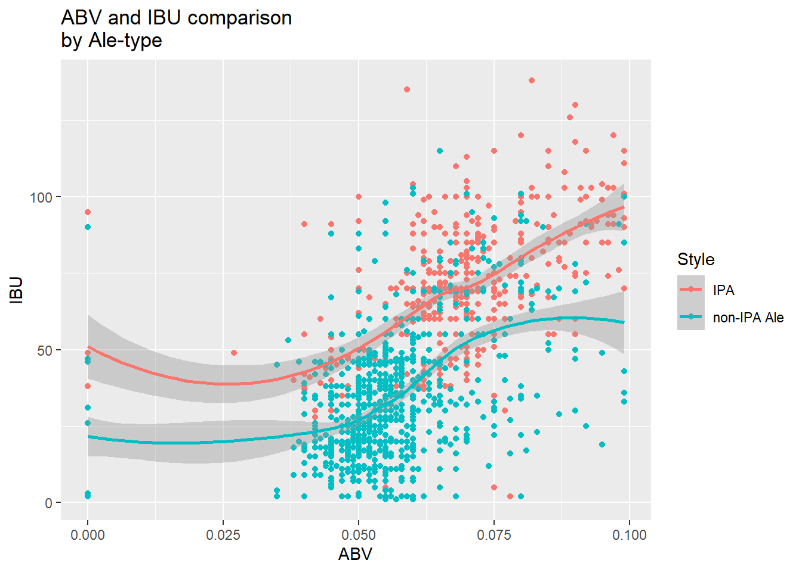
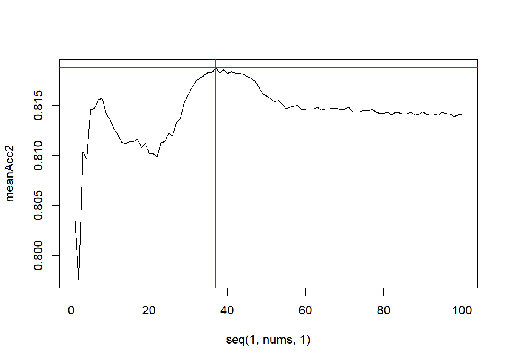
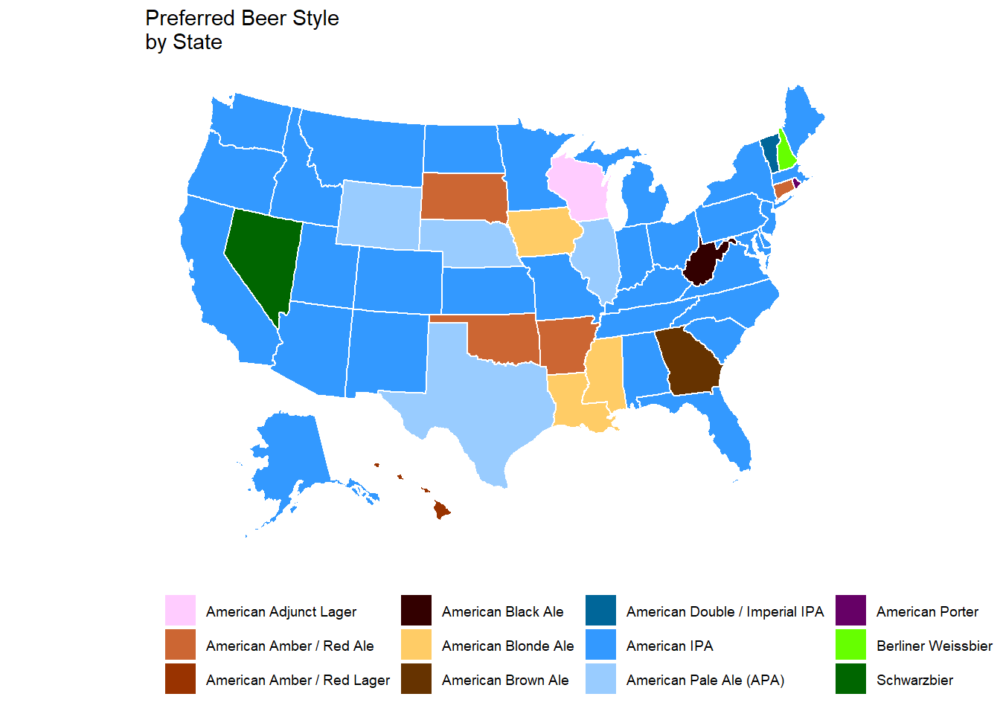

Hello to everyone—the board and directors of Budweiser for this particular study. The following analysis includes my team’s exploratory data analysis (EDA) and our key findings related to your questions on the Beers and Breweries data sets. The primary focus of this EDA was the relationship between alcohol by volume (ABV), international bitterness units (IBU), and classification of ales as either IPA or some other type of Ale.
Link to R Shiny App: Beers Case Study# The necessary libraries for this EDA
require(ggplot2)
require(dplyr)
require(maps)
require(e1071)
require(caret)
require(class)
require(stringr)
require(tidyr)
require(highcharter)
require(usmap)
require(plotly)
require(kable)
require(kableExtra)beers <- read.csv("~/Grad School - Classes/MSDS - 6306 - Doing Data Science/MSDS_6306_DDS_Git/Unit 8 and 9 Case Study 1/Beers.csv")
breweries <- read.csv("~/Grad School - Classes/MSDS - 6306 - Doing Data Science/MSDS_6306_DDS_Git/Unit 8 and 9 Case Study 1/Breweries.csv")
beers_df <- beers[order(beers$Brewery_id),]#initial plot
breweries %>% ggplot(aes(x=State)) +
geom_histogram(stat="count") +
labs(title="Count of breweries per state") +
theme(axis.text.x=element_text(angle=45,hjust=0.8))
#setting up df to append region to breweries
st_reg <- data.frame(State=state.abb, Region=state.region)
st_reg <- rbind(st_reg, data.frame(State="DC", Region="Northeast"))
st_reg$Region <- as.character(st_reg$Region)
breweries_df <- breweries[order(breweries$State),]
breweries_df$State <- stringr::str_trim(breweries_df$State) #trim whitespace
#append region to breweries
breweries_df <- left_join(breweries_df, st_reg)## Joining, by = "State"#plot breweries by state & region
breweries_df %>% ggplot(aes(x=State)) +
geom_histogram(stat="count") +
labs(title="Count of breweries per state\nsorted by region") +
theme(axis.text.x=element_text(angle=45,hjust=0.8)) +
facet_wrap(~Region, scale="free")
#creating df for table analysis
b_tabledata <- breweries_df %>%
group_by(State) %>%
summarise(Breweries=n()) %>%
left_join(st_reg)## Joining, by = "State"#re-order data
b_tabledata <- b_tabledata[order(b_tabledata$Breweries, decreasing=T),]
t1 <- b_tabledata[which(b_tabledata$Region=="North Central"),c(1,2)]
t2 <- b_tabledata[which(b_tabledata$Region=="Northeast"),c(1,2)]
t3 <- b_tabledata[which(b_tabledata$Region=="South"),c(1,2)]
t4 <- b_tabledata[which(b_tabledata$Region=="West"),c(1,2)]
kable(list(t1,t2,t3,t4),
booktabs=T,
align=c("c","c"),
col.names=c("State"," Breweries"),
escape=F) %>%
kable_styling(full_width=F,
position="left",
bootstrap_options = "bordered") %>%
add_header_above(c("North Central"=1,"Northeast"=1,"South"=1,"West"=1),align="l") %>%
add_header_above(c("Brewery count by state\nsorted by region"=4),bold=T)
|
|
|
|
The above graph & table show the number of breweries per state (both are broken down by region for more compact reading).
# Merge the data
combined <- merge(beers_df, breweries_df, by.x="Brewery_id", by.y="Brew_ID")
#head of the merged dataframe
head(combined,6)## Brewery_id Name.x Beer_ID ABV IBU
## 1 1 Get Together 2692 0.045 50
## 2 1 Maggie's Leap 2691 0.049 26
## 3 1 Wall's End 2690 0.048 19
## 4 1 Pumpion 2689 0.060 38
## 5 1 Stronghold 2688 0.060 25
## 6 1 Parapet ESB 2687 0.056 47
## Style Ounces
## 1 American IPA 16
## 2 Milk / Sweet Stout 16
## 3 English Brown Ale 16
## 4 Pumpkin Ale 16
## 5 American Porter 16
## 6 Extra Special / Strong Bitter (ESB) 16
## Name.y City State
## 1 NorthGate Brewing Minneapolis MN
## 2 NorthGate Brewing Minneapolis MN
## 3 NorthGate Brewing Minneapolis MN
## 4 NorthGate Brewing Minneapolis MN
## 5 NorthGate Brewing Minneapolis MN
## 6 NorthGate Brewing Minneapolis MN
## Region
## 1 North Central
## 2 North Central
## 3 North Central
## 4 North Central
## 5 North Central
## 6 North Central#tail of the merged dataframe
tail(combined,6)## Brewery_id Name.x Beer_ID
## 2405 556 Pilsner Ukiah 98
## 2406 557 Heinnieweisse Weissebier 52
## 2407 557 Snapperhead IPA 51
## 2408 557 Moo Thunder Stout 50
## 2409 557 Porkslap Pale Ale 49
## 2410 558 Urban Wilderness Pale Ale 30
## ABV IBU Style Ounces
## 2405 0.055 NA German Pilsener 12
## 2406 0.049 NA Hefeweizen 12
## 2407 0.068 NA American IPA 12
## 2408 0.049 NA Milk / Sweet Stout 12
## 2409 0.043 NA American Pale Ale (APA) 12
## 2410 0.049 NA English Pale Ale 12
## Name.y City
## 2405 Ukiah Brewing Company Ukiah
## 2406 Butternuts Beer and Ale Garrattsville
## 2407 Butternuts Beer and Ale Garrattsville
## 2408 Butternuts Beer and Ale Garrattsville
## 2409 Butternuts Beer and Ale Garrattsville
## 2410 Sleeping Lady Brewing Company Anchorage
## State Region
## 2405 CA West
## 2406 NY Northeast
## 2407 NY Northeast
## 2408 NY Northeast
## 2409 NY Northeast
## 2410 AK WestHere are the initial views (beginning and end) of the combined dataframe.
#adding in a df of missing IBU values per state
na_byState <- data.frame()
for(i in st_reg$State){
na_byState[i,1]=length(which(grepl(i,combined$State)))
na_byState[i,2]=length(which(grepl(i,combined$State) & is.na(combined$IBU)))
}
names(na_byState) <- c("Beers_count","IBU_NAs_count")
na_byState %>% mutate(Percent_NA = round(IBU_NAs_count/Beers_count*100,digits=0))## Beers_count IBU_NAs_count Percent_NA
## AL 10 1 10
## AK 25 8 32
## AZ 47 23 49
## AR 5 4 80
## CA 183 48 26
## CO 265 119 45
## CT 27 21 78
## DE 2 1 50
## FL 58 21 36
## GA 16 9 56
## HI 27 9 33
## ID 30 13 43
## IL 91 52 57
## IN 139 48 35
## IA 30 5 17
## KS 23 4 17
## KY 21 7 33
## LA 19 9 47
## ME 27 20 74
## MD 21 11 52
## MA 82 31 38
## MI 162 124 77
## MN 55 9 16
## MS 11 0 0
## MO 42 13 31
## MT 40 17 42
## NE 25 16 64
## NV 11 3 27
## NH 8 6 75
## NJ 8 0 0
## NM 14 8 57
## NY 74 28 38
## NC 59 29 49
## ND 3 0 0
## OH 49 17 35
## OK 19 8 42
## OR 125 38 30
## PA 100 53 53
## RI 27 7 26
## SC 14 9 64
## SD 7 7 100
## TN 6 1 17
## TX 130 41 32
## UT 26 15 58
## VT 27 10 37
## VA 40 5 12
## WA 68 25 37
## WV 2 0 0
## WI 87 45 52
## WY 15 3 20
## DC 8 4 50sum(is.na(combined)) #number of total NA's (equal to NA's in IBU & ABV)## [1] 1067sum(is.na(combined$IBU)) #number of NA's in IBU## [1] 1005sum(is.na(combined$ABV)) #number of NA's in ABV## [1] 62combined_df <- combined #create working df
###set seed
set.seed(7)
#Generalized Imputation on Mean for ABV
#calculated mean for all non-missing values & replaced NA's with mean.
combined_df$ABV <- ifelse(is.na(combined_df$ABV),
round(sample((mean(combined_df$ABV, na.rm=T) - sd(combined_df$ABV, na.rm=T)):
(mean(combined_df$ABV, na.rm=T) + sd(combined_df$ABV, na.rm=T)),
size=sum(is.na(combined_df$ABV)), replace=T), 0), combined_df$ABV)
#Subset known IBU's for train/test
ibu_known <- combined_df[which(!is.na(combined_df$IBU)),]
ibu_unknown <- combined_df[which(is.na(combined_df$IBU)),]
#correlation between numerical vectors - weak association
ibu_known %>% select_if(is.numeric) %>% cor() %>% corrplot::corrplot()
#visualizing strongest relationship between IBU and categorical values
plot_ly(ibu_known, x= ~reorder(Style,IBU), y= ~IBU) %>%
add_boxplot() %>%
layout(title="IBU by Beer Style")#visual comparison with ABV and Style (same order as IBU-relationship)
plot_ly(ibu_known, x= ~reorder(Style,IBU), y= ~ABV) %>%
add_boxplot() %>%
layout(title="ABV by Beer Style\nordered by increasing IBU")#Imputation by naive Bayes for classifying IBU
#External cross-validation IBU as binned factors of values
model <- naiveBayes(IBU~., data=ibu_known)
###multiple iterations
iterations = 150
masterAcc = matrix(nrow = iterations)
for(j in 1:iterations){
train <- ibu_known[sample(seq(1:length(ibu_known$IBU)),
round(.7*length(ibu_known$IBU))),]
test <- ibu_known[-sample(seq(1:length(ibu_known$IBU)),
round(.7*length(ibu_known$IBU))),]
pred <- predict(model, train)
t1 <- table(factor(pred, union(pred, train$IBU)),
factor(train$IBU, union(pred, train$IBU)))
CM <- confusionMatrix(t1)
masterAcc[j] = CM$overall[1]
}
colMeans(masterAcc) #average accuracy across the 150 iterations## [1] 0.8424686var(masterAcc) #measure of the variance across the 150 iterations## [,1]
## [1,] 4.833251e-05#Impute IBU's for unknowns (using nB model)
imp <- predict(model, ibu_unknown)
ibu_unknown_nB <- ibu_unknown
for(i in 1:nrow(ibu_unknown_nB)){
ibu_unknown_nB$IBU[i] <- imp[i]
}
combined_df_nB <- rbind(ibu_known,ibu_unknown_nB)
combined_df_nB <- combined_df_nB[order(combined_df_nB$Brewery_id),]The above code combines our imputed data into a single dataframe.
q4_df <- combined_df_nB %>%
group_by(State) %>%
summarize(ABV=median(ABV, na.rm=T),
IBU=median(IBU, na.rm=T),
Region=Region)## `summarise()` has grouped output by 'State'. You can override using the `.groups` argument.q4_df <- q4_df[order(q4_df$ABV),] #reorder data
#scaling factor
sf <- max(q4_df$IBU, na.rm=T)/max(q4_df$ABV, na.rm=T)
#simultaneous visualization of ABV & IBU across states by region
q4_df %>% mutate(ABV=ABV*sf) %>%
pivot_longer(names_to='y_new', values_to='val', ABV:IBU) %>%
ggplot(aes(x=State)) +
geom_bar(aes(y=val, fill=y_new, group=y_new),
stat='identity', position=position_dodge()) +
scale_y_continuous(name="IBU", labels=scales::comma,
sec.axis=sec_axis(~./sf, name="ABV",
labels=scales::comma)) +
facet_wrap(~Region, scale='free') +
ggtitle("Median ABV & IBU by State") +
theme(legend.position="bottom",
#guide_legend(title=NULL),
axis.text.x=element_text(angle=45,hjust=0.8)) +
labs(fill=NULL)
Of particular note is that New Mexico has the highest median IBU at 88 units.
#finding the state with max ABV
q5_ABV <- combined_df_nB[which.max(combined_df_nB$ABV),10]
#finding the state with max IBU
q5_IBU <- combined_df_nB[which.max(combined_df_nB$IBU),10]The state with the ABV is Colorado with a value of 0.128. And the state with the highest IBU is Oregon with an ABV of 138. Neither of these values came from the imputed data (i.e. they were not previously NA values).
combined_df_nB %>%
summarise(minABV = min(ABV),
q1ABV = quantile(x=ABV, probs=0.25),
medianABV = median(ABV),
q3ABV = quantile(x=ABV, probs=0.75),
maxABV = max(ABV),
meanABV = mean(ABV),
sdABV = sd(ABV),
)## minABV q1ABV medianABV q3ABV maxABV meanABV
## 1 0 0.05 0.056 0.067 0.128 0.05823568
## sdABV
## 1 0.01637826zeros <- sum(ifelse(combined_df_nB$ABV==0,1,0))
combined_df_nB %>%
mutate(ImputedZero=ifelse(ABV==0,1,0)) %>%
ggplot(aes(x=ABV, fill=ImputedZero)) +
geom_histogram(stat="count", color="black", fill="goldenrod")
#violin plot
combined_df_nB_2 = combined_df_nB
combined_df_nB_2$hold = 1
head(combined_df_nB_2)## Brewery_id Name.x Beer_ID ABV IBU
## 1 1 Get Together 2692 0.045 50
## 2 1 Maggie's Leap 2691 0.049 26
## 3 1 Wall's End 2690 0.048 19
## 4 1 Pumpion 2689 0.060 38
## 5 1 Stronghold 2688 0.060 25
## 6 1 Parapet ESB 2687 0.056 47
## Style Ounces
## 1 American IPA 16
## 2 Milk / Sweet Stout 16
## 3 English Brown Ale 16
## 4 Pumpkin Ale 16
## 5 American Porter 16
## 6 Extra Special / Strong Bitter (ESB) 16
## Name.y City State
## 1 NorthGate Brewing Minneapolis MN
## 2 NorthGate Brewing Minneapolis MN
## 3 NorthGate Brewing Minneapolis MN
## 4 NorthGate Brewing Minneapolis MN
## 5 NorthGate Brewing Minneapolis MN
## 6 NorthGate Brewing Minneapolis MN
## Region hold
## 1 North Central 1
## 2 North Central 1
## 3 North Central 1
## 4 North Central 1
## 5 North Central 1
## 6 North Central 1combined_df_nB_2 %>%
ggplot(aes(x = hold, y = ABV)) +
geom_violin(fill = "blue") +
xlab("All Beers ABV Distribution") +
ylab("Distribution of ABVs") +
scale_x_discrete(labels = NULL)
The ABV variable had 62 imputed 0’s. The error rate for this is 2.5726141%.
combined_df_nB %>%
ggplot(aes(x=ABV, y=IBU)) +
geom_point() +
labs(title="ABV and IBU comparison") +
geom_smooth(method="lm")## `geom_smooth()` using formula 'y ~ x'
We can see that there is a positive correlation between IBU and ABV. We can see a big cluster around 5% ABV, and we predict that these are regular 12 ounces of beers which, according to NIAAA in the U.S., contain between 4-7% ABV, with the average being 5%. Anything above estimates to be malt liquor which averages to be 7% ABV. Just based on this we couldn’t determine the causation, so we decided to compare by Ale and IPAs. We can see that the majority of Ales have low ABV and IBU while the majority of IPAs have high ABV and IBU. Budweiser has average 5% ABV and 7 IBU; therefore, we may carefully suggest focusing on products with ABVs within range of 5.6 to 5.8% and IBUs of 19 to 64. This range might be more competitive in the existing market.
sum(grepl("IPA",combined_df_nB$Style)) #total IPAs## [1] 571#check for 'India Pale Ale' instead of 'IPA'
sum(grepl("India Pale Ale",combined_df_nB$Style)) -
sum(grepl("India Pale Ale",combined_df_nB$Style)&grepl("IPA",combined_df_nB$Style))## [1] 0#isolate all IPA ales
q8_ipa <- combined_df_nB %>%
filter(grepl("IPA",combined_df_nB$Style)) %>%
mutate(Style="IPA")
#isolate all non-IPA ales
q8_otherAle <- combined_df_nB %>%
filter(grepl("Ale",combined_df_nB$Style) &
!grepl("IPA",combined_df_nB$Style)) %>%
mutate(Style="non-IPA Ale")
#recombine
q8_df <- rbind(q8_ipa,q8_otherAle)
q8_df %>%
ggplot(aes(x=ABV, y=IBU, color=Style)) +
geom_point() +
labs(title="ABV and IBU comparison\nby Ale-type") +
geom_smooth(aes(color=Style))## `geom_smooth()` using method = 'loess' and formula 'y ~ x'
q8_df <- q8_df %>% mutate(Style_Num=ifelse(Style=="IPA",1,0))
#run knn iterations to evaluate optimal k-value
set.seed(7)
splitPerc = 0.7
iterations = 100
nums = 100
masterAcc2 = matrix(nrow = iterations, ncol = nums)
for (j in 1:iterations){
accs = data.frame(accuracy = numeric(100), k=numeric(100))
trainIndices2 = sample(1:dim(q8_df)[1],round(splitPerc*dim(q8_df)[1]))
train2 = q8_df[trainIndices2,]
test2 = q8_df[-trainIndices2,]
for (i in 1:nums) {
classifications = knn(train2[,c(4,5)],test2[,c(4,5)],as.factor(train2$Style),prob=TRUE,k=i)
CM2 = confusionMatrix(table(as.factor(test2$Style),classifications))
masterAcc2[j,i] = CM2$overall[1]
}
}
CM2## Confusion Matrix and Statistics
##
## classifications
## IPA non-IPA Ale
## IPA 136 34
## non-IPA Ale 53 237
##
## Accuracy : 0.8109
## 95% CI : (0.772, 0.8456)
## No Information Rate : 0.5891
## P-Value [Acc > NIR] : < 2e-16
##
## Kappa : 0.6033
##
## Mcnemar's Test P-Value : 0.05363
##
## Sensitivity : 0.7196
## Specificity : 0.8745
## Pos Pred Value : 0.8000
## Neg Pred Value : 0.8172
## Prevalence : 0.4109
## Detection Rate : 0.2957
## Detection Prevalence : 0.3696
## Balanced Accuracy : 0.7971
##
## 'Positive' Class : IPA
## meanAcc2=colMeans(masterAcc2)
#add titles / labels for axis
{plot(seq(1,nums,1),meanAcc2,type="l")
abline(v=which.max(meanAcc2),col="red",lwd=1)
abline(h=max(meanAcc2),col="red",lwd=1)}
which.max(meanAcc2)## [1] 37max(meanAcc2)## [1] 0.8187391#internal cross-validation using optimal k
CM3 <- confusionMatrix(
table(knn.cv(q8_df[,c(4,5)],
q8_df$Style, k=37,prob=T),
q8_df$Style)
)
CM3 #print out the confusion matrix## Confusion Matrix and Statistics
##
##
## IPA non-IPA Ale
## IPA 431 141
## non-IPA Ale 140 822
##
## Accuracy : 0.8168
## 95% CI : (0.7965, 0.8359)
## No Information Rate : 0.6278
## P-Value [Acc > NIR] : <2e-16
##
## Kappa : 0.6082
##
## Mcnemar's Test P-Value : 1
##
## Sensitivity : 0.7548
## Specificity : 0.8536
## Pos Pred Value : 0.7535
## Neg Pred Value : 0.8545
## Prevalence : 0.3722
## Detection Rate : 0.2810
## Detection Prevalence : 0.3729
## Balanced Accuracy : 0.8042
##
## 'Positive' Class : IPA
## We decided to use KNN classification for our approach. From external cross-validations, the optimal number of nearest neighbors is 37. From this, we checked our accuracy, sensitivity, and specificity of predicting IPA versus non-IPA ales. The accuracy for predicting IPA with internal cross-validation based on ABV and IBU was found to be 83.83%, the specificity was 80.95%, and the sensitivity was 75.86%.
head(table(combined_df_nB$Style)) #checking list of styles##
##
## 5
## Abbey Single Ale
## 2
## Altbier
## 13
## American Adjunct Lager
## 18
## American Amber / Red Ale
## 133
## American Amber / Red Lager
## 29sum(ifelse(combined_df_nB$Style=="",1,0)) #finding the unidentified styles## [1] 5style_byState <- combined_df_nB %>% select(Style, ABV, IBU, State, Region)
#replacing empty strings with 'unknown'
style_byState$Style <- replace(style_byState$Style,
which(style_byState==""),
"Unknown")
table(style_byState$Style) #checking update##
## Abbey Single Ale
## 2
## Altbier
## 13
## American Adjunct Lager
## 18
## American Amber / Red Ale
## 133
## American Amber / Red Lager
## 29
## American Barleywine
## 3
## American Black Ale
## 36
## American Blonde Ale
## 108
## American Brown Ale
## 70
## American Dark Wheat Ale
## 7
## American Double / Imperial IPA
## 105
## American Double / Imperial Pilsner
## 2
## American Double / Imperial Stout
## 9
## American India Pale Lager
## 3
## American IPA
## 424
## American Malt Liquor
## 1
## American Pale Ale (APA)
## 245
## American Pale Lager
## 39
## American Pale Wheat Ale
## 97
## American Pilsner
## 25
## American Porter
## 68
## American Stout
## 39
## American Strong Ale
## 14
## American White IPA
## 11
## American Wild Ale
## 6
## Baltic Porter
## 6
## Belgian Dark Ale
## 11
## Belgian IPA
## 18
## Belgian Pale Ale
## 24
## Belgian Strong Dark Ale
## 6
## Belgian Strong Pale Ale
## 7
## Berliner Weissbier
## 11
## Bière de Garde
## 7
## Bock
## 7
## Braggot
## 1
## California Common / Steam Beer
## 6
## Chile Beer
## 3
## Cider
## 37
## Cream Ale
## 29
## Czech Pilsener
## 28
## Doppelbock
## 7
## Dortmunder / Export Lager
## 6
## Dubbel
## 5
## Dunkelweizen
## 4
## English Barleywine
## 3
## English Bitter
## 3
## English Brown Ale
## 18
## English Dark Mild Ale
## 6
## English India Pale Ale (IPA)
## 13
## English Pale Ale
## 12
## English Pale Mild Ale
## 3
## English Stout
## 2
## English Strong Ale
## 4
## Euro Dark Lager
## 5
## Euro Pale Lager
## 2
## Extra Special / Strong Bitter (ESB)
## 20
## Flanders Oud Bruin
## 1
## Flanders Red Ale
## 1
## Foreign / Export Stout
## 6
## Fruit / Vegetable Beer
## 49
## German Pilsener
## 36
## Gose
## 10
## Grisette
## 1
## Hefeweizen
## 40
## Herbed / Spiced Beer
## 9
## Irish Dry Stout
## 5
## Irish Red Ale
## 12
## Kölsch
## 42
## Keller Bier / Zwickel Bier
## 3
## Kristalweizen
## 1
## Light Lager
## 12
## Low Alcohol Beer
## 1
## Märzen / Oktoberfest
## 30
## Maibock / Helles Bock
## 5
## Mead
## 5
## Milk / Sweet Stout
## 10
## Munich Dunkel Lager
## 4
## Munich Helles Lager
## 20
## Oatmeal Stout
## 18
## Old Ale
## 2
## Other
## 1
## Pumpkin Ale
## 23
## Quadrupel (Quad)
## 4
## Radler
## 3
## Rauchbier
## 2
## Roggenbier
## 2
## Russian Imperial Stout
## 11
## Rye Beer
## 18
## Saison / Farmhouse Ale
## 52
## Schwarzbier
## 9
## Scotch Ale / Wee Heavy
## 15
## Scottish Ale
## 19
## Shandy
## 3
## Smoked Beer
## 1
## Tripel
## 11
## Unknown
## 5
## Vienna Lager
## 20
## Wheat Ale
## 1
## Winter Warmer
## 15
## Witbier
## 51#creating the dataframe for State-preferences
style_byState %>% group_by(State) %>%
summarize(Style = names(which.max(table(Style))),
ABV = mean(ABV), #could switch to median if needed
IBU = mean(IBU))## # A tibble: 51 x 4
## State Style ABV IBU
## <chr> <chr> <dbl> <dbl>
## 1 AK American IPA 0.0556 34.4
## 2 AL American IPA 0.062 50.1
## 3 AR American Amber / Red Ale 0.052 25
## 4 AZ American IPA 0.0564 37.8
## 5 CA American IPA 0.0607 44.8
## 6 CO American IPA 0.0598 47.0
## 7 CT American Amber / Red Ale 0.0611 42.0
## 8 DC American Blonde Ale 0.0656 54.9
## 9 DE American IPA 0.0275 50.5
## 10 FL American IPA 0.0579 41.4
## # ... with 41 more rows#creating the summary for grpahing
summary_byState <- style_byState %>%
group_by(State) %>%
summarize(Style = names(which.max(table(Style))),
ABV = median(ABV),
IBU = median(IBU))
summary_byState <- summary_byState %>% dplyr::rename(state=State)
beer_colors <- c("#FFCCFF", "#CC6633", "#993300",
"#330000", "#FFCC66", "#663300",
"#006699", "#3399FF", "#99CCFF",
"#660066", "#66FF00", "#006600")
plot_usmap(regions="states",
data=summary_byState,
values="Style",labels=F,offset=0.5, color="white") +
theme(legend.position="bottom",
legend.title=element_blank()) +
labs(title = "Preferred Beer Style\nby State") +
scale_fill_manual(values=beer_colors)
Above, we can see a depiction of majority preference by state for certain styles of beers. When ties occurred, we gave the win to the most prevalent beer-type nationally. The focus of our analysis here was to present a by-state retail option. With additional supply-chain information, we may be able to help optimize future distribution or optimization efforts.